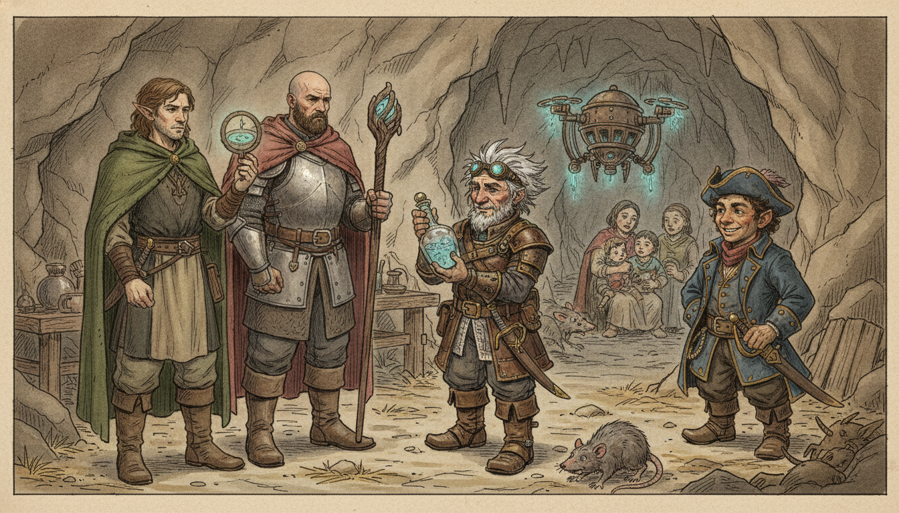
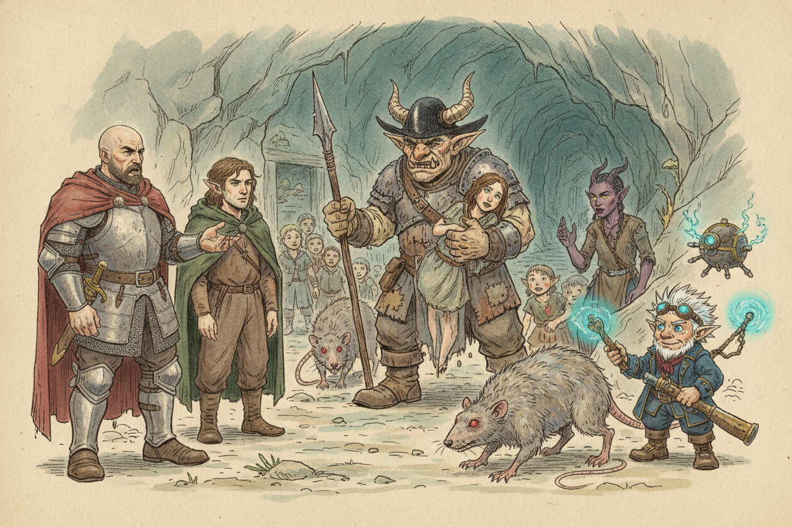
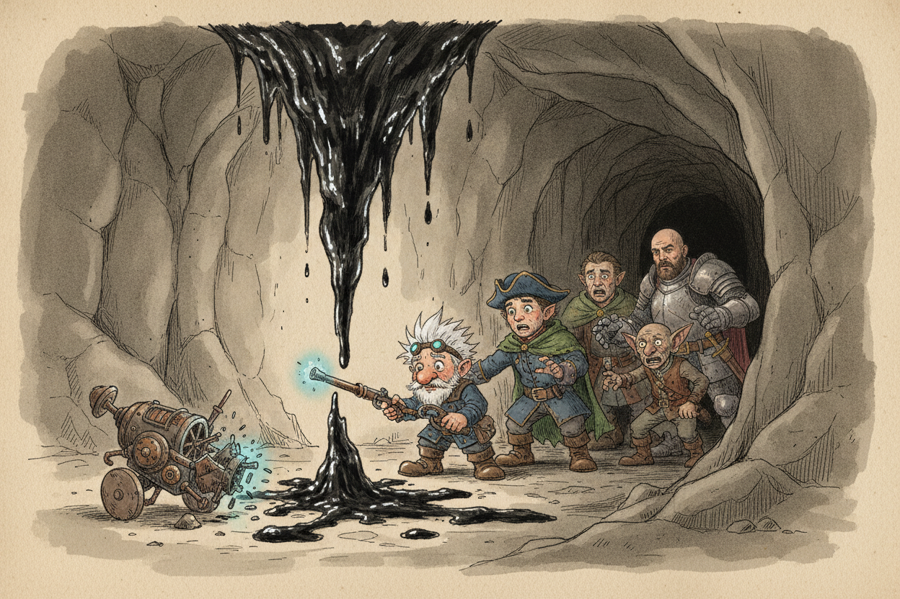
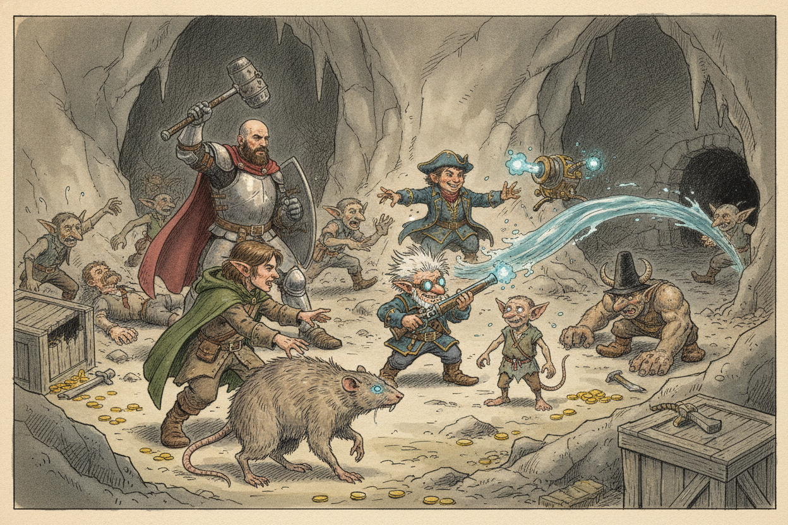
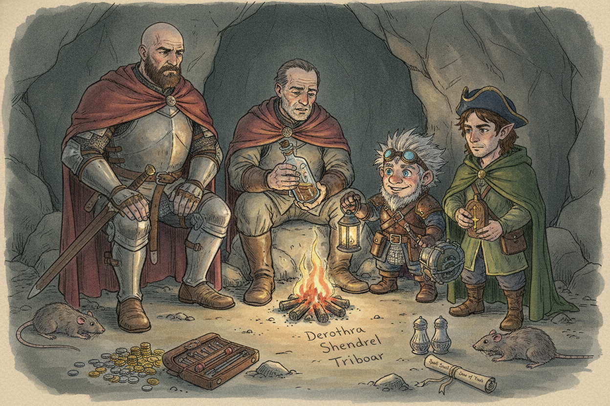

Session 2025-12-07

In brief: A tense truce with the goblin boss got the children out alive, the crew wisely refused to trade blows with a black ooze roosting in a stalactite, and Molak gave up the genie bottle along with a name in Triboar — Derothra Shendrel — who's said to know the wish-word.
Deal with the boss

Pushing deeper past the bat cave, the crew came face to face with the goblin cave's boss — a big goblin in a horned black hat, a captive woman under one hand and a javelin in the other, flanked by lesser goblins and a pack of dog-sized rats he called his "babies." He wanted three gold a head for the villagers. The crew's purses came nowhere near his asking price, so talk turned to trade. He had a problem down one of his tunnels — a "little slime" the lads were too spooked to face — and would let the whole group walk if the crew took care of it. Hal pushed for the women, children, and injured to go free first, and with a nudge of Woz's guidance the boss allowed the children to leave. A tiefling woman from among the captives, who plainly knew all the little ones, was chosen to lead them out. The rest of the villagers stayed under his thumb as collateral.
Snigbat and the stalactite

One goblin was assigned to guide them to the trouble — Snigbat, a small, twitchy thing who confided almost at once that the boss (whom he called "Boz Hark") was likely to betray them and that he wanted out of the cave. He led them through a passage so tight the party had to squeeze single-file to a broad chamber and pointed at a great stalactite hanging from the ceiling. Fiz was called forward and recognized it at once — the stalactite from Windraven's vision, the "great evil" the Emerald Enclave druid had refused to enter. As they watched, a black ooze bled slowly down the stone's side. Fiz sent his force ballista in as a probe; a force bolt tore a chunk out of the slime and it seemed hurt. But when it slid to the floor it whipped out an acid-slick pseudopod, punched the ballista apart in a single blow for sixteen damage, and kept coming. Bottled up in the passage, the crew called the retreat and shuffled back out the tunnel single-file. The ooze, blessedly, did not follow.
Back to the boss

That left the boss and his goblins waiting at the mouth. There would be no honoring the bargain now — the crew had not killed the slime, and word from Snigbat was he had never meant to let the villagers walk anyway. They rolled initiative and set to it. Woz used Charm Animals to turn two of the giant rats friendly, cutting the boss's guard in half. The paladin, sorcerer, and artillerist worked through the goblins and their leader in a running fight, one guard and two villagers falling before the last of the goblins broke and scattered down the far tunnels. Snigbat, who had turned on his old master when the crew held the line, was still with them at the end and asked if he could tag along as a scout. The crew — after some ribbing about "Stingbat" — took him on.
Spoils and the name in Triboar

With the goblins routed and the cave quiet, Woz sent the two charmed rats into the stalactite chamber to test it. They tore chunks out of the ooze before its acid ate them alive; melee, plainly, was no answer. The crew rolled the boulder off the boss's stash and turned up a modest haul — twelve gold, silver and copper, a matched silver salt-and-pepper set, a set of woodcarving tools in a bloodied leather case, a wooden holy symbol of Silvanus inlaid with gold that Woz took, and a spell scroll of Zone of Truth. In a quiet aside, they showed Molak the ornate bottle. The old innkeeper, his village lost and his adventuring days behind him, confessed he had meant to take it up himself. Instead he pressed it back on them and gave up the name he had been holding: Derothra Shendrel, leader of the village of Triboar, north up the road past Waterdeep. Speak the genie's true name, he said, and the bottle grants a wish. The crew settled into the cleared cave for a proper rest and hit level four.
What's next
- Travel north — through Waterdeep, then on to Triboar — to find Derothra Shendrel and the genie's name.
- The black ooze still hangs in its stalactite; Windraven's warning about it is unresolved.
- Molak stays with the surviving villagers, who now have to decide whether to try Nightstone again with the Zhentarim squatting in it.
- Snigbat is with the crew as a scout, angling for a spiked club and a place in the crew.
- Word from Molak: hill giants have been raiding silos down in the Golden Fields.
Original session notes (Fiz's POV)
Make deal with boss goblin, all children leave with tiefling woman
One goblin comes with us to deal with slime, Snigbat
Find stalactite, contains a slime, bail on killing slime
Battle goblins, win, get some treasure, Molak let’s us keep genie bottle
Derothra Shendrel knows name of genie, she’s in Triboar
Up to level four
Raw transcript (473 chunks of auto-transcribed audio)
Lightly chunked. Expect overlap with table chatter.
Okay, that's recording. Everyone's given their consent to record. Not for training data, though. Damn it! I had to sneak that in there. Training AI on players.
I like that you fixed my... You're welcome. We want that extra. I was trying to cheat you. Aha! You didn't notice, he was up against the wall.
I wish this was a little more see-through. That was just improvised. Okay, and then I'm gonna try something else this session. Background noise? Yeah. A little, uh, smells, we got noises.
Bats! No smells! Bats and dripping water. We had smells. Now we get to make our own smells. Kinda.
If you want to plug it back in. They don't. No, no. Patchouli oil. Who knows? They all just smell exactly the same.
This cave is chill. This isn't ominous spooky. It's like a jazz cave. I like it, though. Like an elevator. It's a stage over there, and it's kind of being obscured.
Okay, so you guys have just... Sorry, it's hard to start. It's just like there's a cold pool of water. I have to jump into it. So we should start by having a casual conversation with each of the villagers? Each of them.
All 20 of them. Actually, a few of them... So what's your story? have started to just walk towards the entrance. Uh-oh. I had to leap over that crack.
Holy crap, dude. Fucking shit. I yell, not too loud, I say, wait. They're just leaving. Huh? They walk right over the crack.
They probably want to stick together if you want to live. Okay, they move back. Is that a problem? It's like Final Fantasy. They can't jump. Okay.
But some of them scream anyways. Scream? As... Maybe they should get out of the cave. And you guys see some, uh, the silhouettes of a few creatures against the entrance of the cave mouth, illuminated by the light behind them. Up here to block the exit.
They called him back. You're welcome, pennies. so did they know should we do like did you see a bunch so are we so we can see five are we can we tell if they've noticed us or if they're coming back like I mean those dead corpses outside of the cave they probably have a pretty good idea of something's going on yeah so now you just see them there and some of the villagers scream I can't do a convincing screaming are those goblins but I can do a convincing screaming I should be able to see them I can see 60 feet, right? 60 feet, yeah, that seems... What do they look like? So you can see three creatures that are like about the size of dogs, and then two sort of like humanoid creatures, but obviously goblins behind them.
Just silhouetted. And a voice from... God, this went so much better in my head. Okay, and from this tunnel, more up here, and a voice. Now, wait just a minute. Looks like you're trying to walk out of here with my lunch for the next several days.
And there's one goblin who's much bigger than the other goblins. And he's got this big black hat with horns on it. What's the lady is there? What's her situation? She's like being manhandled by this large goblin. But not being actively threatened with a knife or anything?
Well, he's got a javelin in one hand, but he's not making a threatening gesture. But he could very easily dispatch this woman. Now I'm a reasonable goblin, but I can't just let you walk out of here. Sure you can. Well, I could, but I ain't gonna. Who's gonna stop you?
Well, what do you want? What do I want? I can make a deal. I'm a deal-making soul fella. Alright. We're listening.
Yeah. How much gold you got? Not much. I'll take three gold per head. Your head? They're worth nothing but a penny.
Five, ten, fifteen, twenty, twenty-five-ish. And these creatures, as you can see more clearly, these are giant rats. So they're like, basically rats the size of dogs. So I can't mount them. There is a third one, but I... I might be able to.
No, but I replaced the little rat drawing I made. Rat note. Nice little box. I guess that sucks. This is round three. So there's two goblins here and three rats.
Three goblins. I should have kept my mouth shut. That you see. If we were to pay, how would we know you'd keep your end of the bargain? And that you walk out of here? That's right.
I would retreat. You leave the gold. I back away. Everyone leaves. Nobody has a counter. We can take the girl with us too?
Everyone? As long as you can afford it. Oh, three gold per person. Per us in the party? No, per person. Well.
How many? Fuck it, let's find them. Give me a total here. Oh, God. I got two. It's like, I don't know.
It's like five gold, right? No, it's gold. No, you idiot. At least 25, then. I think the math works. 75 gold.
How much gold do we have? I have 10. Nowhere near enough. Who do we make the bank? I have a... Actually, I want to run this by you.
Because we talked about earlier is that I hadn't prepared all of my spells. So since then I have added them, but I want to run it by and make sure this is fair because I didn't do it before. Do I need to wait for a long rest? No, you just assume you had prepared them. I do the same thing. I think you have the spell slots still available.
So I have a level 1 skill called Command, where you can command a creature. I think they do a saving throw. Is this my paper scrap loft? You can do like a one word command and then approach, drop, flee, drop, halt. So I was thinking about maybe trying to do that on the leader and trying to get him to flee. What's the save?
That's a good question. Intelligence? Okay. Just so you know, mechanically, if you do that, you'll have to roll initiative. And you're not guaranteed to go first. It's a wisdom save.
Wisdom. I feel like you're just adding this down. Arbitrarily. Do you want to add, like, swapping it out? And you know what? They're not goblins, actually.
They're orcs. Retro music. Good job. Oh, yeah. Hmm. Well, I don't think we have that much gold.
So, we might have a problem. Perhaps if you could solve a little problem for me. Yeah? There's a... All those other goblins over here? These children and women over here?
Oh, I don't care about them. You don't care about them? Yeah, they're useless. I can't fight. I got Hal here wanting to just... See, I was gonna do you a favor.
Yeah, so wait, so we can solve that problem for you. That's not the problem. Oh, okay. You don't want all these mouths to feed. Now, him and his entourage move a little closer. So he can see you.
Now, and that cave over there is our water source. But there's a creature there that it's unfriendly and it's been a bit of a thorn in our side the bat cave you did he indicates this cape which you haven't been in i don't think yes and yet we know all about it god damn it what can you tell us about this creature oh it's a trifle thing what kind of creature is it It's like, uh, just a little slime. But, you know, it scares the lads. Scares them good. But for four strong fellows like yourselves who managed to kill my ogres, which I'm not too pleased about, you should take that into account. Oh, I've taken it into account.
But remember, there's a reason that those ogres listen to me. You will listen to me too if you know it's good for you. Now, if you were to eliminate that problem for me, I'd let you take most of the villagers. It has to be all. It's got to be all the villagers. What was it again?
Okay. All the villagers. What was that creature again that was in there? It was just a little slime. Slime. Nothing.
Just a little slime. Baby, baby, baby. Why haven't you taken care of it yourself? Like I said, the lads are scared of it. Goblins just don't do well with slimes, you know. It's just, it's well known in the history of goblins and slimes.
What's the makeup of the villagers? Are they women, children? They're, if you, you've had, well, make a, there's not been that much time. Make a quick perception check. uh this is plus seven seven that's not good not good i have plus five so 16 16 uh what are the two highest rolls sorry do i need to roll a nine can i modify this 13 plus your perception Should be your wisdom Wisdom bonus You can just look at your wisdom bonus Minus one, so I get twelve Okay, so Between you guys, a quick Check and You know, communication You can see there's like a few families Of people that are together Some have, you know Men with them adults some are not and there was a couple of guards you didn't catch the count but there's a couple of people that were guards but they look like they got it pretty bad in terms of the violence. How about this you let the women and children and injured go and hang on to the rest until we vanquish Qube or whatever it is.
Sorry, not Q. We're casting. And then once we've done that, you release the rest. Make a persuasion check. Ah, shit. Eight.
Can I help by saying, yeah, that's a good idea. Yeah. I do have guidance, but it's a skill check. What am I rolling? Guidance, persuasion, skill checks. Oh.
I guess that was considered a skill. Yeah. Okay. Do you want to give him guidance? Yeah. What do you roll again?
Eight. Well, yeah, I rolled a 12. I'm going to intimidate. What does guidance do? The target gives you an extra d4. Oh, okay.
To add to whatever check. I think it's going to help. Plus I press you. I'll let the children go. They got the least meat on their bones. And I'm reasonable.
One person can lead them out. okay the person you're holding ah no can do I was about to feed this one to my little babies scratches one of his rats on the head all right well I guess that's acceptable to us right all right yeah okay there's a moment where like you know the parents have to convince their children to go and, like, safe. Who do you guys elect to take the children? And choose, like... Like an able-bodied adult from the group. Okay, there's a tiefling woman who, you know, she actually seems to, like, have a relationship with all the kids, and she, like, calms them down.
She's like, I can take them out. Okay. She goes, and I'm just gonna... say it's like eight kids jump over the crack kids the kids are the clean petties these guys move aside till i'm out all who survived this day tell our story um several of the uh the parents of the children like come up to you and like put their hands on you thank you thank you so much how many of your goblins are going to help us with this oh come on We need at least one to show us the way. Yeah, you know where the slime is. Snibble where?
Is this your expendable goblin or your best fighter? It's the one you get. Go with him. All right, he's going to go first. All right, show us the way. Are any of the villagers here, like, you said the guards are in bad shape, but is there anyone who looks like in fighting condition in the remaining villagers?
Um, what about the leader guy? What's his name? Here, I'm going to roll the HP for the remaining adults, including him. I guess we're gonna do sixes. I guess maybe they should just stand guard right in the group. Don't bring them with us.
What kind of spells do we have if I take a slime? I don't have a lot of attack-based spells. We haven't got any d6s. I mean, I have a shield. Two more. Slimes split.
Can I shape a slime with a shape of water? Slimes split apart, right? When you attack them? I'm not telling you that. That's a yes. Alright, what do I know about slimes?
I'm gonna roll... Yeah, roll history. So it looks like there's like three people that are still kind of healthy. Fourteen. Able-bodied. They're all like farmer folk, though.
Okay. None of them are. Fourteen. What do I know about slimes? Slimes. There's different varieties of slimes.
Some of them are, like, pretty weak and feeble and low-level, easy kind of monsters. There are more deadly slams, like there's a famous gelatinous cube. Usually they tend to be kind of acidic. They're amorphous, they can fit in small spaces, and sometimes they split into multiple asexual reproduction through splitting mitosis. Okay. All right.
Yeah, all right. How do you guys proceed? All right, lead the way. Wiffle Balls. Is this his name? Wiffle Balls.
Weasel Sniffer? I pulled a random name out, but he does have a name. Anyways, we call him by his name. And we're bringing our expendables along with us, right? Well, I don't know what's going to go. So they don't seem...
None of the villagers seem willing to go. They're all, like, traumatized and horrified. So you might be able to persuade them, but... No, I mean, these are soldiers. Oh, those guys are... Yeah, those guys are ready to go.
So we're going here. We're not going here. Oh, we're leaving. They're all... Yeah. Yeah.
Line ourselves up. What was I looking for? Oh, the... Oh, we're running behind his old whatever his name is. Powder wig. Oh, it's a powder wig.
Powder cake. It doesn't matter, we're gonna kill him. Okay, that's right. Let's go. Meat. I forgot where I am.
Should I move us? Sure. We're all going... Oh, it's like a single file. I'll be... I guess I'm in the tank.
So... Can I...? I said Super Warrior. The movie? Here's my force ballista. Oh you have a...
Oh it's a Star Wars cantina guy. I don't know where I got that. What is your force ballista? It's the little... I created him outside the cave. I guess it only lasts for an hour.
How much time do we think has passed since our battle with the... Snigbat. Snigbat? Yeah, that was worth looking at more. How much time has passed since our battle with the orcs? Battle with the orcs?
That was yesterday. Ogres. Oh, since the ogres, um, less than an hour. Less than an hour? So your ballista, I guess it's still there. Maybe you should lead the way.
I'll just say canonically 30 minutes. Alright, we've got half an hour left. Sweet. Okay, um... This guy's back up. So, uh, what orders are you guys coming in here?
There is only room to go single file. Okay. Our tank goes first, right? Yeah. And then how about me and then our four expendables behind me? Yeah.
Who's this? That's my force ballista. This is, uh, Fizz? Yeah. I'm good with me. I only have a little force on this belt.
Oh, no, no. You still need me. Oh, you're force ballesta. That's my little mechanical pal. Okay. I thought you were...
Yeah. Don't you have a... Or you just made it on... I mean, I have Garth. It's a dwarf. I'm not really a great standing drawer.
But I can use it if you want. Or you can use the pepper. Okay. Okay, so he leads you to this passage where it's very tight, and in order to go through, you'll have to squeeze. Whatever a halfling size. I guess creatures small and smaller would not have to squeeze.
Snigbat turns to you how? and says he's probably going to betray you. Boz Hark really sucks. But there's a way out over here. I can show you. Well, if you help us, we can help you get away from it if you want.
Yeah, I'd like that a lot. Me and Boz Hark, well... Is it the boss you're talking about? Yeah. Okay. Why don't you tell us what we're walking into right now?
Oh, he was right. It's a slang, but it's really scary. Well, yeah, you think it's scary. Can we defeat it? I don't know. How many other goblins have you got?
Oh, in this cave? I don't know if I should tell you that. Well, we're going to help you. If you help us, the better you help us, the more we can help you. So, I think there's like a half dozen in the cave right now, But there's several patrols that go around this hilltop. So there's more goblins outside.
Like 20? Like maybe another dozen? A dozen? Okay. Do we want to do the slime thing or do we want to just try to... Then we're skipping out on the lady.
Yeah. What's his name? I meant go back and kill the goblin guy. Well, he's got the woman hostage. yeah what is how much collateral damage are you going to say some kids there let's keep in mind you guys are actually out here so he's really just talking with Hal at this moment I think what I was thinking was that if we take off we're leaving all those people behind because they're not following us are they? no they're staying outside right we can't abandon the people that we came here We told them we'd get him out of here, so So take us to this to this slime But we will help you the more you I just feel like the slime they're not fighting the slime So I feel like it's kind of like a little bit of a trap Yeah, I mean How do you know he's not just gonna attack you and come back out especially after you fight this thing So I'm saying we can turn around now.
Someone's trying to come in I think. Yeah. Do they know the password? Is it locked? Or are they just going to the door? One sec.
Was it the other door? Maybe. That's what it sounded like. That's not locked from that. That's not locked from the outside. What is locked here?
From the outside? Or, I mean... We don't remember. We're just locked. I'm gonna keep going because that's what I was ordered to do it's up to half yeah let's go let's take a look at this line it's right there and he points to this big stalactite that's hanging from the ceiling. Okay, that's...
Is that the slime? That hanging thing? No, it's in it. It's inside it? Yeah. Okay.
How do we kill it? I don't know. I don't think you can. It feels like the big boss of the cave. I mean, that's what I saw, right? Oh, wait, that elf guy.
That seems like it would be. I would probably recognize it if I saw it, I guess, because I've seen it in a vision. My implication is we don't have all our shots. Yeah, you're way out there, though. We're not involved here. I'm going to turn back and say, hey, Fizz, can you squeeze up here and tell me, is this what you saw?
Sure. Coming through, coming through. Yes. It is. It is. This thing is a big evil thing.
He starts to shake and tremble in fear and back against the cave wall. I don't think I can do this. He wasn't as scared of it. Why are you so scared of this thing? Why do you call this thing a slime? It's a big stalactite.
It's incitement. How does he know? Has he seen it? Have you seen what's inside of it? No, I just know that all the goblins that have come over here haven't come back. did you say there was an exit over here are they just leaving cause someone else saw it it's a good question though I understand your skepticism what else is in there can we go I see that there might be a couple passages down that way is our fresh water which we can't drink anymore how do you get it oh so this thing came in recently the stelectite thing Yeah.
It became a problem recently. Yeah, recently. Maybe he can find the other gophens. You've not heard from anybody who's come in this cave before? Well, it's not that no one's seen it. It's just I haven't seen it.
Really trying to stick to what I said. Sure. You guys got any spells? or anything that could... I've only got one or two. I think I'm like, we need to...
No, it's coming out! All right. This, like, black... Back up. I start telling people... Just like a backup.
Black slime starts to drip down the side of the stalactite. Oh, God! Oh, God! Let me out! Let me out! He tries to squeeze past you.
I'm telling everybody to back out. You're telling everyone to back out? Yeah. Back out! Hey, we need to talk about this. All right.
All right, I back out. All right. Okay. Are we choosing plan B? We didn't get a chance to get him on our side. Did you recognize that slime?
Mr. Slime Expert? Yeah, that's the... What kind of slime was that? That's the great evil that, uh, what's his face? Daniel something.
What do you remember? The kind of slime? Weird-ass name, myself. Daniel Windraven. No, I didn't talk. It wasn't a slime.
it was what we saw was a stalactite hanging from the ceiling. Yeah, but there was a... And then this black ooze started coming out of it. I don't know if we know what this is. Well, I've never fought slime before, so do you guys have any... What can we send in there?
I'd rather come out of them. Hey, can we borrow one of your rats? One of my precious babies? Wow, you're chickening it out with my deal. Oh, well, if you would rather give us a goblin baby, we'll take one of those. Yeah.
Yeah, you can have as many of those as you want. What are we doing? Tross a baby in there. No, I don't know. Feed it. Now we're sacrificing.
They're just goblins, guys. Wow. It's changed. What about your little machine that you made? Can we send that in? Good.
It's halfway through its life. It's true. Its lifespan, so let's use that as a probe. I can't, like, see through its eyes, you know, so. Yeah, but you can go with it. I'll go with you.
Yeah, I'll go with you. Let's walk your machine up there and... I mean... Let's see what this... I'm assuming that if I try to fire at something I can't see. I got a torch.
No, but I would, yeah. It's like a single-file line situation. I guess, can I be behind the force ballista? Yeah, you could fire this thing. Alright, I'll give it a shot. Be behind and watch.
Alright, let's do it. Okay, so you... Okay, what are the properties of this thing? So, it has an AC of 18? So it's just like a remote control. Eldritch cannons.
I should have just killed the boss. Yeah. AC of 18. And it has 15 hit points, I believe. Okay, does it have any, like, immunities, resistances? It...
It's a machine. It is immune to poison damage and psychic damage. OK. If it is forced to make an ability check or a saving throw, all its ability scores are 10 plus 0. It disappears if it's reduced to 0 hit points or after one hour. OK.
So what do you have it do? And it has a range of 120 feet. So I'm going to take a shot at this thing rain spell attack. So we go back in there and the slime... So you just see the... you see the stalactite.
The slime was no longer there? No, it retreated into it. This is a very small area. Like we should draw it out if it's possible. I'm not in there so I probably don't know that. But I mean we could sit there like it seemed to come out when we were there before.
Okay, just wait for it to go. Fire as soon as it shows its slime. So it comes out, you start to see the thing just sort of coming out and then slowly it touches the ground, starts to pull up. Fire. Okay, make the attack roll. Thank you.
I should designate a Music Master. If only we had the slime smell. Yeah. Slime smell. So is it like the same bonuses like firing a crossbow when I make a ranged spell attack? Yeah.
Plus your spell attack modifier. So whatever your... It's your spell casting ability, which is what? Intelligence? Yeah. Plus your proficiency bonus.
Okay. Proficiency bonus plus two. So then... I think. Intelligence is... It's like whatever the plus is on your spell attacks.
Plus three. So yeah, plus five. Plus five. That sounds right. Okay. Sixteen plus five, 21.
Hits. And what kind of damage is that? It's a force damage? Yeah, force damage. So 2d8, force damage. And if the target is a creature, it is pushed up to five feet away from the cannon.
That's ten damage. Okay. Okay, the hit appears effective. So, like, when it hits the ooze monster, like, where it hits, you see that part just kind of break apart and then just dissolve. Oh, sweet. Okay.
So this seems to be like a good kind of attack against this thing. Does it get pushed at all? The nature of this creature prevents it from being pushed. Like, some of it splashes, but it just forms again. Because of its amorphous nature, the pushing doesn't affect it. Gotcha.
Does it look smaller? It looks slightly diminished. Looks effective. And then, so roll initiative. Initiative. All of us or Tis?
You can all roll initiative if there's things you want to do. Three. Three plus proficiency, right? Or no, I'm sorry. It's just your dex. Unless you have some other bonus.
I got a four. Seven. Sorry, so is it plus the initiative on the character sheet? Yeah. Okay, so 18. 18.
18. I don't know what I want to do. All right, somebody else. And what did you get, Hal? What's a-- wait, so I rolled a 3. Plus your dex.
Oh, so it's 3. 3. So each of these spaces are 5 or 10 spaces? 5. I tell everybody what happened basically so they know. Taz?
Seven. A bunch of bad rules. Garbage. Okay, so Waz, you're first. Or Eno. Taz?
No, Eno's first. Oh, Eno. Waz. I can't get... get, I don't think I'm like way back here. So I can't get all the way to here to see the slime.
Okay. I'm going to put him here with you guys. Cause he's also afraid of the boss, but, uh, you can, you can move. Right. Oh, would it be like five, 10, 15, 20, 25, 30. So I'd be right there.
Yeah. Slimes here. Yeah, exactly. So I can't really do much. Yeah. And I mean, Were you guys following closely for communication?
I imagine you would have been. I think that makes sense. Yeah, yeah. Here we go. Okay. Okay, so if I can get within range to do an attack, I will do an attack.
Okay, I don't think you could. There's just too many people in the way. You could prepare. Prepare an action or maybe something else that could help someone in some way. I would prefer to try to draw it out because I don't think anything we do here is going to be able to... It's going to be too tight?
It's going to be too tight. Do I have time to say that? You can talk. It's your turn now. You have six seconds. What do you do?
You're crammed in this little tunnel. You say it appears to have a... I say, well, we've seen it. You're not sure you can just take a dodge action that if anything attacks you as disadvantage on the attack. And that's an action, right? Yeah.
I guess I'll move as close as I can and do a dodge action, I guess. Okay. Because if we were drawing it out, I would prepare an action. But if we're not doing that... It doesn't seem like it... So then toss.
Okay. It doesn't seem like it will pursue us. It doesn't seem like it will pursue us. Like when we left the cave, it went back in before. If I need to push past them, can I still move at full movement speed? Or do I take a penalty?
So it's going to be difficult terrain to pass through the space of one of your friends. And you can't stop on their square. You'd have to move past them and stop. So all of the spaces are occupied to here. So it would be 10, 20. I don't think you have enough movement to make it out there.
You have to dash to do it, I think. Yeah. Oh, yeah. You could do that. Oh, but also... this creature dash and try to get down one of the other hallways so you have like thinking about that but you can take an attack of opportunity this creature is here now that's the whole thing so just i think letting it be a little more amorphous Okay.
I'll say it's actually here just so Canonically he had the space to make a ranged attack Yeah, so like we're all kind of like creating quite a bottleneck here. Yeah, I'm casting retreat on myself. Okay. And preparing a dodge action for now. Okay. Expeditious retreat is a bonus action then?
It is a bonus action, yeah. Okay. Cool. Okay, this creature goes. So the blob just hits the ground, slowly moves towards this thing. This is your cannon?
Yeah. Okay. And then a like sort of like fist like appendage pops out of it and whips out the cannon. 24 hits I imagine. Yeah. A lot of dice.
16 acid damage. 16? Yeah. I knew it was going to be acid. I knew it was going to be. Remove it.
Space is clear. And then it continues moving. So we got Fizz out. So it's done its turn, right? Yep. And then it is...
Fizz's turn. My turn? Yep. Time to yell, to retreat. Everybody back out of the tunnel. Coming at us.
We're all stacked up. Snigman. They'll take an attack of opportunity if you retreat. I can disengage and then flee. I don't know if you have the movement to get out, though, because of all the people on the way. That's true.
That's the thing. I shouldn't have... This is the epic music, the soundtrack where we all die in this tunnel. One by one, punch by an apple. Like miners. I guess I should give you boss music.
How tall is the cave? Imagine the slag tight is up. Say run! High somewhere. Ten feet high. Okay, so just this run, basically.
Yeah. so if I dash I can get 50 but half so I can do 25 basically so it's blocking our way we can't go into the cave further so I don't think I can get out you could ready your movement for when everyone's out of the way that's true Alright, we need to back up! And then I'm gonna... I forgot to roll for the guards. I'm going to go on 9. I'm gonna have them go at the end of the rotation and then go on 9.
Disengage and ready my movement. Okay. To move as far as I can. So to ready an action? That's an action. Oh.
So we will be able to disengage and do that. So I can't move. What's the purpose of disengaging? So they can't take an attack of opportunity. Ah, OK. You can't disengage and-- And ready action.
Ready movement? Ready movement. I see. Uh. I guess I'm going to ready a dodge. Okay.
Yell at everyone. So when you're ready and action, you can take movement as part of that action. You're in the front. So ready and dodge, you can dodge and move. As long as you haven't moved all of your movements. Can I not ready, disengage and move?
Yes. So the first thing I said. We're all trying to get out so we can fight this in open area. Since you're right there. We're all learning here. Was the Harmon just attacking it?
I think he's going to get acid punched in the face sometimes. Right, but that's going to happen anyways. Give me spells or any kind of decoys that you can pull out of your... Maybe like a distraction? Got any more of those toys in your... Good, but that would be my action, I think.
Okay, so then it's going to be Hal. I've done what I've done. I live with my own choices. So what did you do, Sean? I readied a disengage and move action. Okay.
So when all you guys get out of the cave, like I told you, get out of the cave! Well, I have to do that too, right? Because I'm stuck behind you. We're all stuck in this thing. You don't have to ready a disengage because you're not next to it. So you could-- Get ready to dodge.
You could ready and attack and move, right? Not that, yeah. Contingent on everybody else getting out of the cave, right? So-- yeah, like-- Is that kosher? What is the question? He can ready and attack and move when everybody gets out of the cave.
Yeah. So you could say, this is the attack I'm going to do, right? Sure. OK. I want to ask people to get out, and then I'm going to move out. Wait, I'm going to attack and then move out?
I'm not telling you what to do. So yeah, what are you doing? I'm going to ready and attack and move. What's your check? I'm going to go with chucking a javelin at it. But I mean, is he able to prove it?
I guess he's you already here. Yeah. OK. He's going to do the same thing. Just ready a dash. Which one?
Snigbat. And Eno. Oh, you know, I said the guards are going to go. Yeah, they didn't have to. Yeah, okay. So the guards are all going to move out.
They hear the order, and they move out of the way. So I'm going to just move them to the bottom. Okay, and then yeah back to you know, I'm going to do oh wait this is me. Okay, so you can move through a space it's just difficult terrain. So it costs 10 to move through your buddy. 5, 15, 20, 25, 30.
Get off me man. We need better targets. Wait, can you move one more? I think so, yeah. Okay, toss. Here you go.
So I just move. I just move, that's it, right? Can I prepare an action? Yeah, you can ready an action. Are all these goblins still just milling about right there? Yeah, so when you come back out, I'm going to say these guys move back.
Yeah, I think I need to lock the entrance. I need to lock the villagers to back up. I like to suck those tokens. Don't go where the bats are, but go over here. Or wherever. Maybe head towards the entrance of the cave.
Telling the villagers to? Yeah. I guess head this way. Just get away from whatever thing. Villagers will go. 13, which is right after you.
I move just right behind Right here Can I prepare You want the villagers to move here? In this direction Oh, okay So they move like 30 feet And can I prepare an attack? With my crossbow? Yes I prepare a crossbow attack Okay, and then these readied actions I'll trigger so they can move. So, Hal, you were going to attack. I think Fizz will go first.
You're disengaged. Move. So you were here. Five. Here. Five, ten, fifteen, twenty, twenty-five.
And then Hal, what was your readied action? Prepare javelin. Okay. So now I attack? Yep. All right, remind me how this works.
We got 13 plus... What am I going to do? Uh, I feel like... You got your actions here. Plus 5. Okay.
Nice. Yeah. So 13 plus 5? Or what is it? 12? 11?
What did you want? 13? So this thing's AC is 7. - So you hit it. - Oh, so you hit it. - Yeah.
Just put that out there so we can make it a little. - 1d6 plus three? - 1d6, okay. So do six damage. - Six piercing damage. Cool, and you see a bit of it splash away and dissolve, similar to what you saw, smaller scale, and your javelin dissolves into it.
It's gone. - Son of a bitch. Okay, so those were the readied actions. Who actually went last? I think it was Taz. Wait, Hal is going to move too.
Yeah. Oh, and move. So, 5, 10, 15, 20, 25, you're stuck there. Okay. Okay, so then... How did it look, Hal?
I think Taz went last, right? Okay, so then... I just like pissed myself. You don't see the ooze follow. God damn it. Oh.
This thing's healed. Yeah, we could. I think we should fuck up the goblins. Okay, so Boss Harkin's like, what's going on? Why, why? What's it going to be?
Are you going to go back in there? Are we going to throw down right the fuck now? We could say, like, is there another way in to that area? Yes, so Snigbat indicated he knows another way out. And when you were over here, you could see light coming out that way. So obviously there was, this tunnel leads out.
Okay, is that what you mean? So we could send someone out to go in and flank it? Yeah, go around and come in on the side. It's an option. For half of us. While it's in the stalactite, if we pass by, does it get an opportunity attack?
If you pass by a creature, if you move within five feet of it, and then out of its space, it has the chance to make an opportunity attack. Whether the creature is in a space, that you wouldn't know. He's super tight. But you can run in and disengage and keep going. Or you wouldn't be able to dash in and do that. But you could get past it.
I think, you know, if we... If someone came, like, right here, right, and then... Calm down, boss. It just seems like they strategizing us all. Yeah, yeah, yeah. And then I guess you would enter an initiative or something.
So one at a time? Engage, disengage? And then move like... The whole session. That's an option. Is there another way in to the light type?
I asked the boss guy. How about fire? Let's light this thing on fire. Yeah, there's a way around. You're going that way if if you need Stick back show them the way around Okay, do you want to do this split two and two two on one side two and the other Do we continue doing our single file through the cave of death? how long of a trek is it to go the roundabout way stinker oh I mean it's just around the hill like do you have to like leave the cave you could go like this and then like around right there just split the party Two of us and two of the expendables?
Yeah. Send the expendables in first? Yeah, two expendables on each side. Two of us. I really wish you would stop calling us that. I can't remember your name.
I'm bad with names, sorry. That's just easier to remember. All right. I'm okay with that. I say let's do it. Two expendables and two of us.
I'll go outside with someone else. You guys want to go? How about the... you guys are all small right? I am small. You're not small?
Might make sense for the bigger people to go outside since we're not going to be so tied up in a tunnel. But you're melee right in my range. So what happens if we run into the other patrols out there? Oh, you think I should stay here? Oh, snick, but I'll be with you. Yeah, I can't really do range.
He might be a sniveling little worm. He can convey a message. I've got an idea, Nick. Flip that tile over. No, there's stuff on it. Oh, there is that.
Oh, okay. That's actually a geographical feature. Ah, I see. it's just a hole in the ground oh well alright alright so me and someone else how many creatures over there there's like what is that three goblins and two rat things is that what's over there still have that lady though three rats one of them just says rat three rats so I have giant rats rat rat rat so I have channel divinity three goblin that I can charm animals charm around. What's that? It says, each beast or plant creature that can see you within 30 feet must make a wisdom saving throw.
If the creature fails saving throw, it is charmed by you for one minute or until it takes damage. While it's charmed by you, it is friendly to you and other creatures you designate. So we can at least reduce their power dynamic. maybe turn his little creatures against him for a minute. Are you talking about attacking the boss? Are we giving up on the slime?
Versus splitting up the party. I'm not loving that idea. Split the party. That's what you're supposed to do. If nobody likes the idea, I'll do the other idea. We're also saying it all out loud.
Yeah. He did say he would betray us. We're probably going to have to do this anyway. Can we, if we kill these goblins, if we kill these guys here, will they know? Are they in like range? Yeah, they can see.
Yeah. Okay. All right. I say let's take our chances with the goblins. I've changed my mind. Yeah?
You're the boss, boss. So can we-- First, you slit his throat just to kick off stupidies, right? I don't see that. Can we maybe play this a little bit more coy and to get a little bit closer to him if we have some questions? I'd say-- Can we walk over that way? Yeah.
Let's go in initiative order anyway. Okay. Same? No, let's re-roll initiative, actually, because now we're going to have the goblins and the guards and the rats. I was hoping to do a surprise attack. Surprise attack on the table.
That's an 18. So these guys are, like, ready for battle? That's true, that's true. They already called us out when you came out. You might be able to get a better position and tactical advantage that way. Natural one.
I got an 18, so hopefully that's helpful. Okay, that's six. Four. Nineteen. Wish I had that for the worst. That would be nice.
So you guys have those numbers in your memories? Yeah. Okay, fizz? Nineteen. Nineteen, how? Six.
Eno? 18. 18, and Taz? 4. 4, we got the guards. 1.
Although I think they have a plus 2, so 3. And the villagers. 20 somehow. 20. They should retreat. In with the elder goblins.
Okay, and... What am I saying? Snigbat. Rats. Oh sure, I'll give you guys Snigbat. Yeah.
Nice. Freedom! Oh, he's fighting on our... we got a new expendable? Yeah. Your party has expended.
So the lady is back in here, huh? So it's gonna be Fizz, then Eno. Let's... Now that we've rolled initiative, I think we might be bound by the order and the range of your move. Well, combat hasn't started. We can be kind of loose about it.
We'll still take turns. Well, I use a code word, basically, that we developed in the ship to indicate, you know, attack. Like a secret knot tying code word. Can we do a flashback? Flashback, that's right. Three weeks earlier.
We ever find ourselves in a camp full of goblins? You're back down to level one. Wow, hypothetical here. I like that thing. So, D-leveled characters. Second fold.
I cast this on somebody. Do they know I'm casting it? Under Mark? If it doesn't say they do, then... Mystically cast it on them. It treats a QJ, you're in the mystic mind.
It has a verbal component. Can you just say something? You! So, um... I think the verbal just means that when you cast it, you say something. If you want to do that undetected, it'll be a stealth check.
What is that? If you want to try to cast a spell undetected, it'll be a stealth check. Oh, okay. Like without somebody-- I mean, the fact that you're casting a spell might be obvious, but the fact that you're casting a spell at somebody-- Yeah, it doesn't seem like that's obvious. Is that a bonus action? One O's action, yeah.
Okay. Gosh. I can just cast it. Okay, so the villagers, they're just milling about. Fizz, is there anything you want to do? Are you in on this plan to go to gather up with him and talk?
We need to talk. We need to talk this over. We need to get some more intel. Are we saying we had a little conversation over here? Yeah. And the plan was?
To just go talk to him? We need to get as close as possible. Oh, okay. To fuck him up. So, yeah, I'm like, hey, boss man. Yeah, I'm going to walk over with the group.
Okay. And you guys are trying to appear non-threatening? Yeah. Okay. And I will ready an action. Maybe we're implying that we think that it's going to follow us out of the cave.
The plan is to just target the boss. Yeah. We're just going to try and work him. So I was going to try to charm the animals. Okay. I'm going to ready an action.
If when... combat starts. So if you guys are all in on the plan, I'll just say you guys all move up when the last person goes. Okay. And then nobody's fighting, but you will have to make a group deception check. Whether it's, you know, appearing to draw out the ooze or trying to appear, like, non-threatening to chat with him about something, there'll be a deception check involved.
So why don't you all make a... make that. We'll actually be rolling against his intelligence. I rolled a 20. That's a nat 1 for me. I got a nat 20 and a plus 4.
So you add... what do you add to that? Deception. Whatever the plus is. That's it? Okay, shit.
I got a 5, 7. 11. 24. But I did a nat 20 and a 4. I don't know. That was a nan 20?
Yeah. Okay, so basically when it comes all the way around to the guard's turn, who go very fast, as you guys start moving towards boss arc, he shouts out, like, What are you guys doing? No, no, no, no, no. But I rolled it with a 20. It was a group check, and the group failed. God.
But you really brought up the ad. But nobody's drawn weapons. Nobody's fighting yet. Villagers, they start to look a little scared when they hear the shouting. Fizz is going to go. Okay.
I'm going to move with the group. Ready this action. Okay, well, it's clear now. If you guys move towards the goblins, they are going to start attacking you. Okay. So we didn't get to move at all?
That sucks. I'll give you five feet. I look at my captain and I'm like... Thanks, boss. I'll take it, I'll take it. Five feet is good.
Yeah. Five feet is good. Unless you want them to all have used their attacks last round on you. Because last round, they're still not doing anything. They're not threatening, just saying, hey. Yeah.
I just, you know, I look at my captain and we're going. Channel's a vanilla. I give him not this obvious, but you know, like a signal. A wink. And let's not forget for Taz, the goblins are in complete darkness. Those goblins are there.
Actually, and these are. You can see these guys silhouetted a little bit by the light behind them. But for... Is that a 20-foot radius? That's a 40-foot radius. But they can see in the dark?
Yeah, I think it's 20 and 20. They have 60 feet. It's like 10 and 10. So I have 60 feet, so if they can see me... Oh, you're right. So they can't see...
God damn it. So, you're right. It's 10, isn't it? You're right. Yeah, it's 10. So the whole thing's 20.
They're a dim light for me, I think. They're like right at the edge of it for you. And then for Hal, it's dark. Anyone who has 60 foot who has dark vision can see fine. The goblins have dark vision? Yeah.
So I can see them. And I have 60 feet. So all right, I'm going for it then. I pull out my little rock clobber. And it's going to be awesome. Is it a slam?
Just throw a rocket out. It's like a little device that channels energy. Oh, yeah. Well, hit. Right at the boss there. Take the move.
Just to be clear, Alex helped me with this radius, so he's half to blame. Wait, what's that? Wait, I just cut out when you told me to. No, you fixed it. Wait, what am I doing here? Will you cut that out?
Just cutting this thing out. Yeah, that's 40 feet. So we can just use that as a stick. Okay, so you threw a rock. So Boss Hark has to make a deck save. 13.
Fails. All right. 10 bullet hurts. 88 damage. Oh, 16. 18 damage.
Wow. 18. How the hell kind of rock is that? It was a big one. Is it a bullet rock? Damage.
That's my last spell slot. So you're done with spells. I have Tantriss. So I have Command and I have the Charm spell. I'm going to try to do the Charm spell for if I can get within range. That was my original plan.
What was next on the order? Can you get in range and then cast? I think so. So next is, you know-- How's Boss Hark looking? Boss Hark is looking-- HP is 30 feet. Yeah, so within 30 feet of you must make a wisdom saving throw.
So I think as long as I get within 30 feet... How much did you do? 18. Shit. He looks terrible. Can we do it?
Shit. I'm glad. There you go. Goblins was the right choice. You've got to cut off the head. So did the tile go in?
Is distance at an angle? Is it like 5, 10, 15, 20? Are you for... I'm trying to do a little bit. I'm trying to figure it out. So you can move one diagonal part of two.
So you can move like this. You can cut it this way. 5, 10, 15, 20. But you couldn't go 5, 10, 15, 20. That's exactly what I wanted to do, so thank you. I guess I could do 5, 10, 15, 20, 20.
You could go 5, 10, 15, 20, 25. Okay. And then 30? Yeah. Okay. And then that'd be 5, 10, 15.
You just can't go two diagonals in a row. Okay. Let's just say that. You're going to move back to the knight. Okay. You're going to move there and do your charm.
So I'm going to move there. Yeah. And then I'm going to pull out my holy symbol, point it out. I'm imagining that light happens. It looks really awesome. Say, whoa.
It does. It does look awesome. And invoke the name of the deity. And each beast or plant creature you can see has to do a wisdom saving throw. So the rats have to do a wisdom saving throw. It's fucking rat, you know.
What's your spell saving DC? My spell saving DC? I don't even know what happened. Do you have a spell page? Turn to your spell page. That's on it.
Keep going. One more. There you go. Oh, spell saving DC is 13. 13. And what is it?
It's a wisdom save? - Wisdom save, yeah. - Okay, so they have a-- - So they have to beat a 13, is that-- - They have a zero, so first one failed. Second one failed. Third one saved. - Okay, so two of the rats are now considered friendly.
- Yep. - For one minute. - Okay, that's-- - Or until they take damage, so. - One minute is 10 rounds of combat, so. - It's not gonna last that long. - 10 rounds of combat, one minute?
- Each round is six seconds. - Oh, okay. - Everybody does something. Yeah. Trying to imagine it's all happening simultaneously. Imagine it's all a slow motion.
Yeah. So they're considered friendly, but like, does that mean I can ask them to attack? So a creature that is charmed, you have advantage on persuasion checks to influence it, and they won't attack you. Okay. But you can't convince them to attack? You could.
You would have to roll really well, though. Can you talk them into suicide? Very hard skill check. They're still friendly towards boss. Yeah, like, it looks like boss Hark has trained these guys a lot, so it would be very, very difficult to get them to attack their boss. But the...
They're probably not going to attack you. Yeah, they won't attack you. Right, right, right. I guess I'm just taking... I'll just take the win in that he's got two less people that are going to attack us now that we're here. They won't attack you.
Oh. So... Well, good. We just stand behind you. You could probably pursue them to do something more benign, like walk away from the area. So does that count as an action, or is that a bonus action?
I'll let you do that with interaction. So you get a free interaction that's like use an item or open a door or talk. Go fight this line. Yeah. Yeah. But you also have to consider your ability to communicate with these creatures and their capacity to understand you.
So some complex direction is going to be also difficult to persuade them to do. But imagine what they might be trained to do. The rats. Can I ask them to go patrol down a hallway or something? Or go, good job, go... Say flee.
something like that like go there yeah yeah try it persuasion check I'm going to say that's a DC 12 so beat it 12 that's a 12 18 that's an 18 what's your persuasion my persuasion or your animal handling sorry animal handling is good plus 5 plus 5 okay yeah so you know like I speak rat speak So two of the rats... Two of the rats run out of there. I've trained rats before. Yeah. Let's get rid of the word rat. Keep the real rat.
That was a good one. That was the rattiest of rats. It's not even good enough to be... Okay. Shall we? They're away from the villagers.
They're away from you guys that are going to... Okay. So that'll happen on their turn, which is now. Oh, sorry. What else do you want us to move, Nick? Okay.
Oh, sorry, I won't touch your board. Go ahead and have the villagers move. Right now. Okay. And so now the rats go, and they're just going to attack the nearest things. So these guys go attack.
Attack. I thought those were all goblins. Attack. They're just rats, right? And this one... This one's not charmed by you, so he does move at you.
And the rats... Oh, what's their bonus? What's your AC? No, you got 18, right? Right now I have 21. Oh, 21.
So that missed. How do you have 21? Because I have... We do this each time. It's my armor, the armor that I have or something. It's because I have a shillelagh or something?
Shillelagh doesn't... I don't know what the hell. Let's see. Is it medium? Heavy armor. Heavy armor.
I doubt it's 21. That would be super high. Oh, that's my health? Health or hit points? That's right. I think it's 18 with a shield, and if you drop your shield, it's down to 16.
But it still doesn't hit. Okay, and then the others... That's a hit. Not to miss. Oh, and then one more. I will make a note.
and then it's going to be Snigbat's turn and then a bunch of NPCs are going to go sorry a guard has shitty AC So actually all three of those are right. So, god, god. T&D's hard. Sorry. Don't worry, I don't even know my own hit points. Where's the encounter going?
Shit. Shit. Don't yawn. This is exciting. Sorry. Pump the music up louder.
Get some smells going. It's a dirty. Turn on the smell-o-vision. Juices. We're going on technology, though. This is coming to do that much.
Does this work? Oh, what are you doing? Oh, no. It's much more intimidating. Oh, no. Oh, my gosh.
I think it needs to be. This looks very precarious. What are they made out of foam? Yeah, that's what I'm saying with the shield. It's cool. What's that over there?
Is that a goblin? Yeah. You need one of these guys. This is not boss music. Oh, this is mischief. We're shopping.
Ragtime. Embartering. Thinking about how traumatic it would be if I snuck one of these in one of my daughter's rooms when she was sleeping. You guys have to go to the bathroom. I think the mic is better. Put it in your bedroom so it wouldn't wake up in your room.
Okay. Okay. Don't let anyone down this tunnel! Is he retreating? Yep, but as he does... Whatcha guys doing?
He throws a javelin at you, Eno, which is a critical miss. And he does... You caught a javelin. No, he abandons her, and he goes in there. Goes in there. Aha!
Okay. See your leader fleet for us. And so what happened here? Did they attack? They attacked the guards. They all hit.
They all hit. They all bet the guards. How are the guards doing? Fine. They know their place. I feel like we made the right decision.
This battle is going better. Okay. Now we got one, two. I think four. The rest of you should probably flee, too. I'm very intimidating.
I'm not. I don't care about your problems. - Good babies. - Your boss is running away. So we're gonna do one, two, three, four, five goblin attacks. So one's gonna be on a villager, critical miss.
And then two on this guard. Both misses. - That's gonna suck. Two on Eno. Critical hit, and it hit. Okay, here's a critical.
That's plus... two, so... one, two, three, four, five. Plus six, seven, eight. So eight total, piercing, gavage. So, I'm at ten.
Yeah, if we're staying at 18. And then, oh, those two are misses, okay. You're a 10, Hino? No, it's to Hau, and then Toss. I can use myself. Can we say I step to the side to let him through on my turn?
Oh, sure. I forgot to move it all. Yeah, yeah, sure. Okay. So how close can I get to Hino? To Hino?
I'm pretty close. 5, 10, 15, 20, 25, 30. Is it there? Unless you take a dash. What does that dash and tail... It uses your action.
So you can't attack. I want to lay on... I want to cure wounds for Eno. Got to be a touch. Yeah, but that's an action, right? That's an action.
I'll do that, and then I guess I will... Throw a javelin. I guess I'll throw a javelin at this guy who's... Okay. Wait, who attacked you? Those two goblins and that rat.
These two goblins and that rat. Your best bet is probably the rat. The rat? Alright, I'm going to... Actually, I don't know what your best bet is. If you kill it, then Eno can move without disengaging.
Oh, yeah. Yeah, so I'll throw a javelin at the rat. Okay, attack roll. Rat call. 20, nat 20. Nat 20, okay.
So double the dice for that. What's that? So what's the... it's a d6, so you roll two d6. Two. Four.
Six. Plus three. Three. Plus three. So nine. That rat is dead.
Yay. Okay, at the end of your turn... Okay, so this is going to be a new concept, you guys. It's called a legendary action. So some boss creatures have what are called legendary actions that they use between your moves Boss Hark has one legendary action that you can take at the end of one of your turns run away. No, it's You can command one of his goblins to move up to 30 feet And so this one There to you know You know can you turn around can you come to me and I can heal your wounds?
Okay now to his turn one is my turn Actually right now I can take an attack of opportunity. Okay, I move adjacent to the nearest rat so I can hit the three rats of Thunder Wave, which is a 15-foot cone. I think it's a box originating on you? Yeah, 15-foot cube. So I actually moved me slightly to the left so I can hit the guys without hitting our expendables. I don't see an option that would not include at least one guard.
Take out two rats. What if you went here? Oh, this guy's on our side. That's Stinkman. Although he just stood there cowering. Oh, he's on our side.
Yeah. Yeah. You could hit two of the rats. Really, those guys proved themselves in battle. They are going to hit these rats. So if you can draw a 15-foot box that doesn't include a guard.
Is that just a 3x3, or what is that? Yeah. Okay. Can the boxes be oriented in non-45-degree angles? I'm just thinking like this. Yeah, that's a square.
It's a cube, right? Well, I mean a square, but like rotated, you know, 30 degrees instead of 45 degrees. How cool would you get, Mark? This is a Minecraft thing. Yeah, this is a Minecraft thing. Here, make a...
Draw a 15-foot box. And if you can lay it down so that it doesn't... It doesn't... Three by three? Yeah, I'll let the angling happen. You don't have it?
But it can't pass through their square at all. Oh, through their square. Okay, okay, okay. Okay. It's geometrically impossible. Well, no, it's kind of...
It's not geo... All you have to do is lay a flat line across these guys. Totally do it. Okay, I think I got a better idea. I'm going to move here, and then... Blast the villagers?
All you have to do is overlap partially, Yeah, you can do it, but I don't know. Yeah, that would work. Yeah. Okay, so... Well, I had a thought here. I'm going to do this.
I'm going to use my metamagic, the distant magic, which doubles the size of the cube. So then I can hit... All the villagers? From here. Real power move. Is it water?
Is that right? It's mud. It's the mud pit that the ogre was bathing in. It's difficult terrain. Okay, so I have expeditions to treat on, so I can actually... Let's see.
30 feet is six squares, right? So one, two, three, four, five, six. So if I was, like, here, then I could hit this guy, this guy, this guy, this guy. Right? And if I angle it, I can get it to-- I'm just trying to hit them all with one Thunder Wave. That's my distant magic.
Appreciate that. Awesome. I don't think a distant spell works out. I don't think it increases the area. I think it-- It doesn't increase the size of it? Yeah.
It says range, shell, 15 foot cube. Yeah, but that's just the range, like the distance at which you can cast it. And the distance is self, so you can increase it to 30 feet. All right. But it doesn't increase the cube size. It means you can make that cube 30 feet away from yourself.
All right. Then in that case, I'll just hit these three rats. Because otherwise, that would be like that. Yeah, I like that. Yeah. I'll hit the three rats.
Okay, the three rats. So they all make constitution saves, I think. That looks like a fail and a save and a fail. So two fail. Okay, so it's a 1d... No, 2d8.
Nice. 2d8 is the one that takes half damage. Okay. For 11. 11 damage. So the two that fail die.
And... That one takes five. It's rounded down, right? Yeah, does it say it takes half? Yeah. Is that principle?
Okay. Yeah, half as much damage, and it's not pushed. So they're not... Position is not changed. Those two guys were splattered all over. Yeah.
Splattered all over your friends. And this one's badly... It's like Army of Darkness, you know? Just gratuitous. I took extra care to not blast them. Okay.
The guards are going to go. Unless there's anything else you want to do. Do I want to move? Let's see. I have a bonus action so I can move again if I wanted to I'm going to use my bonus action to move towards the lady over there okay these rocks are difficult to raise 5, 10 20. 25.
That's my moving speed, so that's where I moved. Okay. Orange. Okay. No goblins have died yet? Yeah, but I think the problem is they can't actually take this out.
Okay. So now I'm going to introduce you another new concept, which is called a lair action. When you fight a boss in its lair, often have something called a lair action. No, his name is literally Boss Heart. He's the goblin boss. This is like the intro to bosses.
His lair action is he can summon one goblin to appear at the top of the round. So we've got to get rid of him. This is a goblin. One of the children. No, we get it. No, no, no.
We get it. Not worth the confusion. I just write a G for Goblin. Take a spear, child. So who's up? So we have one.
So the villagers, they're all tightly packing up fear for their lives. This Goblin is menacing them and attacking them. But... Actually, I think... Yeah, so I think some of them fall in the mud here. Some of them scramble back way some cross into this little area six hostile goblins and one coward yep and the bosses are our way boss over here also calories Fizz turn.
And then, you know. Fizz, I... You're like way back here. I am... Let's see. I guess...
I'm out of spell slots. I'm out of spell slots, but I can still... You want to do stuff. I can. I got some firebolt. Uh...
Yeah. the guy that's taking you out yeah i'm just gonna move forward over here i guess and yeah fire bolt this guy 11. 11 at a goblin yeah does not Then Eno. That goblin has not been hit, right? I don't think it's hit any of the goblins yet. Yeah.
Except for the boss. Yeah. Something damaged him. Scared the hell out of him. He's going to keep pulling out these special actions every round. He rules.
New rules! Here's a new rule. Two new rules. You're all dead. You get the cave action. I just had a total new crawler card.
I think I'm gonna do sacred flame, which is a 1d8 damage. So that would be this guy. Right? Yeah. At who? Is it a save or an attack?
Yeah, it's a save. At the goblin right next to you? Yeah. Okay. Fails. I got a four.
four hurts him pretty bad but he's not done I'm still alive however very badly burned I was hoping maybe that's two-handed okay okay rats are not doing anything snake is not doing anything he's just standing there useful snake wonder if we can send the villagers for the these guys after those two hark yells keep attacking I'll be right out! You gotta turn your head. And the goblins go. Your boss is leaving you. What's this here? He's almost dead.
This one attacks Eno with his short sword. It's a hit. You're always getting almost dead. 3 damage. I'll raise my own. This one shoots Eno with his crossbow, or no, shortbow.
- You don't want to spare bigger damage. - For four. - So I have three health. - Okay, this one attacks another villager. That's a hit, kills villager. He was a very old villager.
Thought we were going to 100% this cave. Now we can't. We're going to get the bonus achievement. Yeah, we're going to restart the whole level. This one is also going to attack a villager. I hit ult of 4.
What was our last save point? Another dead villager. Oh, man. Those bodies are on difficult terrain. And then what do I got? Two more.
Attacking your guard buddies. critical and a miss so the critical four five six seven eight nine nine on this guy they have 11 hp he's bit by a rat oh he was bit by a rat that guy is dead just keeping us honest it was a good fighter is that all the goblins yep okay Hal alright I'm gonna book it over to Eno and heal him with a spell that I definitely have cure wounds So here Creature you touch Regains a number of hit points Equal to 1d8 plus your spellcasting Ability modifier Which is charisma So what's your charisma bonus? So it's 1d8 plus charisma What's your riz? Is it a 6? charisma or seven those are your skills plus two eight eight nice so i'm back up to 11. i have three so okay uh tos thanks but he healed you for ten right no he rolled a six oh he rolled I'm going to attack the nearly dead goblin there with my crossbow oh fuck 7 it's a miss guards are going to go 5, 10, 15, 20 5, 10, 15, 25 okay, they're going to make attacks on these goblins Miss And a hit The hit is Oh god that's the worst die Seven Seven Seven I think if you get cast it might roll for you Okay at the end of the guard's turn What about that guard?
You know what, he can't see. Oh, you're right. He's gonna use his crossbow on that goblin. Miss. Okay, Boss Heart can't see any of the goblins here, so he can't use his legendary action. But his lair action is still used.
Which is he calls another every turn so we need to get in there Okay Villagers Here's some good towards the exit there. Yeah, we should all push to this side. Distance spell can turn a test spell into a 30-foot spell. Like the range. You can do it in the arms. You can cast a spell from 30 feet away.
Under his fizz. Okay. I'm gonna firebolt the one next to Eno again. okay he's dead he's definitely down he's 2 hp all right he's dead you want to describe how he dies uh he just his head bursts into flames cool you see that say to the other guys The goblins, they look terrified, but it seems like they will continue fighting as long as boss Hark keeps shouting orders. You know. Is the lady trying to flee at all?
Or was she trying to flee? She's probably still hemmed in by these guys. Yeah. I don't know. She's also in pretty bad condition. So there's two goblins there?
Yeah. Okay. Of course, this buff and e-buff. And also destroy spells. These ones that get summoned, they just have 1 HP. It doesn't do damage.
Wait, the goblins that you get summoned have one HP? Yeah. So these don't do damage, that one's a debuff on enemies, that one's a buff on allies. So it'll give this benefit to whoever you cast into. Oh, yeah. I guess I'll try to do a Secret Flame again.
Secret Flame? On whom? That's a A. That's a four, dammit. That's four again. Four, and that's a DC 13.
13 saves. Um... No half damage. Not for that one. That was a cantron. Yeah.
Okay, then uh, after you... I can move still, right? We're gonna have some NPCs go. Yeah, you still move. 5, 10, 15, 20, 25 I'm just going to go 25 I'm just going to go there That's probably a bad idea Snig You see him pick up a rock Look at it Set it down You guys are doing great Throw it at somebody Can we tell our expendable to get his throat? He throws the rock.
Okay. So you see him get a little courageous now. Five, ten, fifteen. And he throws his rock at that guy. It's just an improvised weapon attack that hits. Nice throw.
Good job. And it's an improvised weapon. It's one damage plus his strength. Give him positive reinforcement. Which is minus one. Oh, Jesus.
So it literally hits the ground right in front of the goblin and then hits the goblin in the shins on a bounce. That's your damage. I'm a laver, not a fighter. That's why I was rejected by not doing it. This goblin goes up here. This goblin goes up here.
What is up there? Is that a ledge? Yeah, it's a five-foot ledge. They both... Can I swing a sword up there? I'm not sure.
Both fire... One fires at Eno, one fires at Fizz. Okay. So far away, though. And then... One, two...
so Sounds like power metal album. Oh this is a super smash brothers that's what it's from That's from Kirby. What? Kirby. Kirby. Yeah.
But I know if I'm going to smash. Look at this. It wasn't well. Here we go. The dice are turning against us? Some of us.
It's a hit. Seven damage on Fizz. Great. What's your AC? Does 11 hit? No.
14. Misses, seven, this guy. Eno, 19 hits. Jesus. Eight damage. Eno, get in the back.
And then both of them drop prone. And then Hal's turn. yeah so i'm thinking what does this mean that these guys are up five feet and they're prone you could if you can get to them um range attacks have disadvantage because they're okay but melee attacks have advantage yeah i think they're too far from me right 10, 15, 20, 25, 30. You can still try to hit them from there. And be a tank, you know. With all their ire.
Sprint. Yeah, I mean, I think I'll just kind of sprint and just be right up on them. Yeah, totally. I'm going to do that. Well, but it's probably better. Stop fucking hitting Eno.
You can still try to attack one of them. You'll just have disadvantage. No, he moved too much. I mean, if he just moves to here, he throws a javelin. Oh, that's interesting. And then on your next turn.
Yeah, because you're still closer. You'll still be able to move there on your next turn and hit them. Oh, okay. Yeah, that's a good call. I'll do that. You've got to roll twice.
So roll 220s. Roll what? 220s and take the lower. That's disadvantage. What is that? Roll 220 so you have to lower.
Oh, because the prone got it. That's 15. And 8. Plus. For your javelin. Nope.
Actions. Plus 5. So 13. 13. 13 on the goblin misses. Misses.
Okay. It's 15 hit the goblins. Because they're prone. What's your perception? No, just because that's her EC. Your passive perception?
Sorry. Or just your perception. I can figure it out. Nine. Passive perception? Yeah.
Oh. Ark appears. He throws a javelin at you, Hal. Okay. But now he's available so we can see him. Why did you ask my perception?
Because he was hidden from you. So he has advantage. Got it. He has advantage? Yeah. Thanks.
So he's coming at me. Yeah, he was hiding. Since he was hidden successfully, his stealth beat his... What do you call it? I forgot to make his action so this is, I'm just saying he took a readied action but it's gonna be... what's your AT?
18. 15. So... hits. 3 damage. Okay.
Ouch. Okay. He's going to... No. ...hop up here. Okay.
Thought he was going to disappear again. Is he prone? Bullshit. No, he's not prone. All right. Bring it on, big fat.
How's he looking? He looks healed up. Son of a... Who's that? Taws. Is that lady right in front of them like that?
Yeah. Is she on the ledge or is she... No, she's down in front of the ledge. She's prone, you said, or... No. Just...
that exactly. Do I think I could cast Thunderwave up and not hit her from where she is at and the um geometry of the ledge? Using your like distance spell? Yeah, this thing. Um so no I mean I'll move over there. Yeah if you're if you're up there and you're casting it upwards yeah.
Okay. Yeah yeah. Because they're five feet up so they're like the next space up. Okay so because I have Expeditious retreat so i can do uh okay five ten fifteen uh get stuck on the 20 uh 25 30 35 40 right next to her okay yeah and then i'll thunder wave up Okay, so three. Does that do you have disadvantage or does that work? So, um...
I don't know if the guys that are prone do have disadvantage or not. If someone finds a rule that says they do, I'm gonna assume they don't. I don't think they would. They don't have advantage. So that was the boss. Even on his attack, for some reason, he had disadvantage.
Don't worry about it. Who had disadvantage? We'll do this later. We'll talk about it. Uh, so... What's the DC?
Just plus my, um, primary stat, right? Or my charisma? Um, it's your spell save DC is like 8 plus your spell... Your ability plus proficiency. I'm sorry, I don't know if I actually have that written down. What's your, uh, what's your charisma bonus?
Plus 3. Plus 3, so it's, uh, 8, 9, 10, 13 is your spell save DC. Okay. Um, so... He gets a 15... No, 13, sorry.
13 saves, saves, saves. They all save. Okay. Half damage. What is this over here? Those are the three saving throws.
Those are the three goblins. Okay, okay. Fuck. One plus... Okay, seven. So they're three damage each.
Three damage each. Okay, so this one dies. Yay. That was my last spell slot. Actually not quite. Level two?
Uh huh. And the other one moves. Hard badly and he's hurt like a little. *Clears throat* 25, 30. Who do you guys want him to attack? Boss.
Okay, boss. Miss. These two are attacking this goblin. Miss and a miss. We lost the best experience. You guys were doing so well.
Here's a... Layer action. new goblin appears with a blood dot on him. With the blood dot. - You can do that every turn. - Uh, every round.
- One's programmed in. Interesting. - Villagers move. She's not gonna move 'cause she's threatened by boss there. But yeah, these guys just crowd up more. Fizz.
I'm going to shoot a Boss Hark. Firebolt. That's an 18. 18 hits. So Boss Hark has an ability called Redirect Attack, where if there's a goblin five feet from him, he can force the attack to hit the goblin. That is just leadership.
Next time. That's a good one. Kill that goblin. Okay. It's a 7. Obliterate him.
Oh, but it automatically kills them? Yeah, the summoned goblins only have 1 HP. Oh, I see. You know. This is Whimper, I guess, because he only had 3 hit points. So I think I'm going to try my original command idea.
I'm gonna cast command on the boss, and I'm gonna have him grovel. He saves. Oh shit. Fuckin' egg. I'm gonna... No.
Uh, actually I'm gonna move back. I am gonna move back. Retreat. 5, 10, 15, 20... Yeah, I'll say 20. How long's the charm last out of curiosity?
10 rounds. You're talking about the charm of the rats? Oh yeah. I'm not keeping track of that. 10 rounds? No.
There's so many people in the round, it's probably been like four or five. I think it's been five rounds. I think it's just the number of turns that Boss Hark has had. That's true. We can round it. Canonically, it's five.
Okay. Canonically? Canonically. Is that what that word means? Inconceivable. Yeah, in the actual story.
So it's in again. It was five rounds. Anyway, it's the rat's turn. They're just over there. Just waiting for more direction. Snig.
Throw a rock. You can do it this time. We believe in you. He does have a short bow. He's feeling a little more emboldened by the number of goblins that have been killed, so he will use his... Unless you're holding something.
He holds his bow up and he says, Fuck you, boss Hark! All right. Critical. Oh, it's been good. 17 plus 4. 17.
Hits. Nice. Wait. Hits. Hey. six damage okay boss is looking pretty bad again I wanted to lay down I wanted to lay down you can you wanted to lay down you're prone it's not a disadvantage if you try to shoot me who was that that just went Oh, is that gives you partial covers?
It's the little goblin helper guy. Oh, snake. Okay, so now it's Hark. He's going to go there. He's going to attack Taz. Multi-attack.
He makes two attacks with his scimitar. Jerk. The second attack has disadvantage. That's a hit. Critical. And then...
Does 12 hit? I have a 13. So no, okay. But he gets the one crit. Which is gonna be... 2d6 plus 2.
That's higher than the... 5, 6, 7, 8. Oof! 8 damage. What do you have? What do you have?
Hit points? Now the goblins. area healed. 17. These two are going to shoot a fizz. Good luck.
24. Miss. Hit. Wait, they have disadvantage though, right? Oh, you are? That's right.
My area healed. Miss. 12 is not hit. Nope. Miss. Good job.
Going pro. Good move. Okay. Oh, this one fights guard. Hit. Three, four, five.
Bloody. Miss any? Nope. How? Can I run up and take a swipe at this guy? Yep.
I'm just wondering about the space here. Yeah, you can check the diagonal. So this is your longsword. My longsword, which is going to have your plus 5. 17 plus 5. 23.
23 hits! And then 1d8 plus 3, but it also has this special feature. If you drop your shield, it's a D10. But then your AC drops by two. No, I'm just holding him. And I'm guessing you also dropped your torch when you pulled your sword out.
Yes. So your torch is now on the ground by your feet. Okay. I mean, I have a light source on me, so you should be able to... The torch is still there. It's not extinguished.
The sap feature. If you hit a creature with this weapon... No, that's a 20-24 roll. That's not a... Oh, is it? Yeah.
Oh. We're doing the 2016? Yeah. All right, so I do... The woke roll. All right, so I do eight damage.
Eight damage. It is really hard when you're, like, looking at the skills. like on the website because it has all of them. It's easy to fall into that trap of-- Just call it a different edition. It would have made life that much easier. Yeah, that makes it all in.
All right, he's almost-- Following JavaScript. It's almost there. Hal, toss. Uh-- Killing. I'm just spit in his face. Just give him a really mean insult.
I'm going to use my daggers on him. Is that okay? Daggers. I have a two-time dagger. Okay. So you're going to make a regular weapon.
So you're dropping your stuff, pulling your daggers out. Yeah. Regular attack, and then a bonus action to do your offhand attack, which does not get your attack bonus. It's just a straight d20. It's the first attack. Is the Nick rule a new rule?
Yeah. it is a new rule all of those like weapon properties those are all new we can talk about incorporating them because some of them are cool but it's I don't know how to like really if that balances it or what but it does give the weapons kind of more a little more flavor a little more flair sorry first attack's a miss okay and it's probably a miss seven plus and I don't get to add anything you said right right so yeah both misses both misses value to effort sorcerer sorcerer without your spell slots Guards, these two are attacking this goblin again. Critical miss, hit. I was like, I won. Four, five, six. We'd have also not to roll a two.
A little serious battle going on over there. Then... The villagers are just watching. They're just all off the rocks. Get out here! Fizz.
Fizz. Firebolt. Firebolt. 16 plus 5. 21. 21.
Hitting Boss Hark. Yeah. Okay, Boss Hark is dead. Yay. All the other Goblins. Sorry, I should have let you roll the damage.
You killed him by a lot. Yeah. Plus, what? No, it's plus nothing. All right. Scares you.
Okay, so as soon as Boss Hark dies, the rest of the goblins are going to disengage and flee. Do you guys want to chase them down, try to get your last attacks on them, anything like that? I'll shoot off another fireball. Okay. That's it. Is that a key?
Because, well, the goblins are going to go after you, but there will be a round where there's someone in hit. That's okay. 23. Okay, you kill one more goblin. Nice! You want to collect their ears or something.
Just love killing jobs. Just get some kind of sick gratification. Collect their bones. Yeah. All right. Okay, so the goblins have abandoned the cave.
So they went out this way? Yeah, actually, there's multiple tunnels that lead out of this place. Okay, and what about the rats? They're in love with Eno. You see the rats are still sitting over there. You know that you have another 30 seconds of this ability.
What does it take to make a pet? That these two rats are charmed by you, and they're just sort of sitting and just sniffing the air. Not really sure. Send them to the stalactite. Just hanging out. Yeah, send them into where the slime was.
Feed it. Make it stronger. Feed the slime. For science. Okay, so... So you're like, come on, come on, let's go.
Wait, use them strategically, maybe. Get the rats. I don't think we can engage this anymore. Well, you know, if we came in the other way, it sent the rats in. So you're sending... We have 30 seconds, and I don't have any spells.
Run! Sending the rats in as quickly as you can. Go on, go on. Okay, uh, the... lunch it's just for fun he's like no i want to watch creature drops down uh there's a battle between the the slime creature and the rats um you better roll for it hold on let me see what kind of damage this rest and they killed the slime piercing damage okay so initiative for the rats slime okay so the rats go first they both try to bite the slime they both bite it um and they deal one d one good coin let's three six seven eight nine ten they do quite a bit of damage to it you see them like both like and chew big chunks off the slime, but as soon as they do, their faces burn and sizzle into the acid, and they both die. Eno's just in there.
So I report back to the group that melee is not an option. Don't let him touch. Eno comes back really relaxed. So I'm like, seriously. Okay, so you guys have got the assembled villagers. One of your guard friends.
You haven't been back there yet. Let's get the spoils. That's where all the gold is. The villagers have been ransacked, right? So maybe their stuff is in there. Is there any of your stuff in this cave?
Just listen to them in there. Probably. Do you want any? Should you guys check it out? Yeah. Should I pull back the curtain?
Yeah, go ahead and move it. Okay, so what you guys find, there's like a room over there with like some hay beds and a couple of cages for the rats. And you find the... Okay, so... huge boulder blocking this tunnel. And then there you do find like miscellaneous belongings and another exit out of the cave.
Among the belongings there's like a bunch of weapons, like just ordinary weapons. I can detail them. Like clothes and just other like random effects of the villagers that they pulled out as they they fled the village in haste. But nothing really valuable in that space. Did this goblin also take off? Or are you with us now?
Snigbat? Yeah. Is he our new expendable? He's following along, hoping... He wants to join the club. He'll get a tip or something.
So, uh... That might be cool. Yeah. Do you want a job? Yeah. He can scout for us.
I've always felt... Ooh, he can scout for us. that I didn't belong with goblins. Well, you don't, because you're a freak. You can belong with us. Be next to them.
It's a sort of a new book. That's a good one. I think we could use Stingbat. Stingbat, I like that. Snigbat. What's your name?
Now I'm Stingbat. Stingbat. I'm an expendable number four. Can you guys get me a cool club with a spike on it? And I'll do my Stingbat. More of the nail on it.
When we go to combat, you can have a weapon. I think we tell the villagers to get their stuff. Okay, they get their things, their weapons. They're, like, tired. The tiefling was waiting outside with the children. Do you all, like, collect their dead?
Who cares? Yeah. What did we lose? Two villagers? Two villagers, I think. and guard.
And guard. No, no, not too bad. Moment of silence. All right, we need that. Let's go. One round of silence for each dead village.
I'm going to move this boulder, guys. That's fine. Get out my crowbar. Okay, so, yeah, do you want to move the boulder? Is there another tunnel? Wait, wait, Stingbat, what's in this cave over here?
That's where Bot's heart keeps all his treasure. Oh, good. Okay. I was going to say, That's where the unspeakable evil lives. It's a big, heavy boulder, but you guys are not impeded by time or anything, so you can take 20 on that. Do you know what that means, to take 20?
20 minutes? It means, like, it's a situation where you could conceivably try over and over and over until you succeed, so you can take 20, unless there was, like, some time penalty or some time cost. Take 20 on the boulder. Great. Take 20. You know, if you guys were not, like, if the goblins were still around, you know, the boulder's going to have noise, and it's going to do all this other stuff.
Okay, so in boss Hark's treasure, you get the following. Does someone want to take this down and divvy it up later? Do you guys want to divvy it all up now? So there's 12 gold, 55 silver, and 87 copper. There's a matching pair of silver, salt, and pepper shakers. The set is worth 25 gold.
There's a blood-stained leather case containing a complete set of artisan tools. They appear to be for wood carving, worth 25 gold. There's a holy symbol of Sylvanus. It can be used as a holy symbol. I think the cleric's the only one who could use that. Holy symbol.
Carved from wood and inlaid with gold worth 25 gold. And there is a spell scroll of zone of truth. Oh. I had that as one of my spells today. Tell the truth. Well, you can get an opportunity.
Spell scroll lets you use it without a spell slot. Yeah. Or material components. So the villagers are like eager to get back to town. They ask if you'll escort them. Their town is...
There's a problem. Your new town is this cave. where's that Daniel whatever his name was where did he go presumably off to his village the Ardip forest one of the Ardip elves should we, before we rush off should we do, like this is kind of a room, right? one way in? no, there is a way out, there's an exit there who was looking for the lady again? The guy who you're delivering is too.
Can we heal her? Does anybody have a healing cantrip? I do have one spell slot I could use on to heal her. I also have three help. Her people will take care of her. Do you have an area of effect?
I do actually. It's a ten minute cast. I can do that. We can just do a long rest now. I was hoping. That's what I was hoping, that that room, we could, like, guard it, protect it.
What time of day is it, actually? So, I think you guys got here, like, midday. So, and it's been... It's 12.06. Like, two hours, this whole... To move the boulder and stuff?
Yeah, it did take 20 on that, so... It's, like, three hours, Ben, in this cave. Yeah. So it's like pushing afternoon, getting toward maybe like an hour or two from sundown. Yeah, I think we should rest. I'm tapped, guys.
Yeah. Let's do it. I hate to be a burden, but have you got any food? Yeah, probably. Yeah, there's some baby goblins in there. We could do some foraging.
I mean, there's some ration mud or something. I thought I had equipment written down. I'll share some rations with them. I don't have a ton. How many do you guys have? How many are you willing to share?
I have ten... It says rations for one day. Yeah, I have ten of them. What's a mesket? It's not a rations. It's a rations.
It's a unit of food. It's just a rations. I have one ration. A food unit is like a pound of food and a gallon of water. Oh yeah, mess kits. That's not food.
You can try to eat it. Okay. So when you guys give them all your food, they're willing to stay here overnight. Where are they going to go? Go back to the village. We tell them about what's-his-face is there.
He doesn't... Something's off about him. So all of our food is gone. We're going to be dealing with this guy. Is that the dark brotherhood or what it was called? Yeah.
It's up to you. Basically, if you guys want the villagers to stay here overnight and you want to help and protect them, otherwise they're so desperate for food, they're willing to go face the centaurum and see. Ah. I'm willing to share the rations. I mean, do we need them to stay? Do we?
Don't we have this thing we're trying to get rid of? Yeah, Malak. We need to convince the lady to be with us. Moloch, right? What's that? A lady needs to come with us to go to Moloch.
Is it Moloch here? Moloch's with you. Oh, Moloch's with us. He's the dwarf, right? Yeah. The innkeeper.
And you have a certain bottle. Yeah, we have this bottle that we're still trying to deliver. Can we convince Moloch and the lady to stay with us and send all the villagers? Or should we just feed the villagers? leave on bad terms with those. No, I think so either.
But they also were a little shady. So. If we all stay here we can go back. Sorry. The bottle we're trying to deliver to Moloch? Yes.
But he's right here. Why don't we just give him the... He presumably doesn't have any money to pay us. He's a caveman now. Or maybe some of his gold was in the cave. We took his payment.
We consider it, uh, paid? I don't know. We could talk to him about, like, how does he feel about the town being run by. Play it out, yeah. Hey, we have this bottle of yours that we were supposed to deliver to. Your town left.
If the funds are still in the end, I'll pay you for the bottle if not may we speak in private away from the rest of the villagers sure absolutely let's go talk next to this time's a waste do you happen to know what it is you have there nope we do we do know what it is No, no, no, but we do, we don't tell him. I wouldn't. Yeah, maybe we should have, like, inferred on what our story is. Because I have to read Primordial, so yes. Yeah. I know what's inside, and what its true worth is.
Do you tell him that? Yes, I tell him that. Okay. Well. Then do you know the nature of the thing? The Afreeji?
I think we learned that they are fickle and duplicitous. Indeed. It's like Monkey Ball. Unless you know its name. Do you know its name? I don't.
But I know someone who knows how to get it. Now, I was going to take this bottle and go on a little adventure of me own, but Zorobsens has changed, unfortunately. I implore you all to go to this person in my stead. What did you want to use the bottle for? Well, if you speak the name of the genie, it will grant you a wish. Any wish your heart desires.
What was your wish? I have some ideas. Bigger in. Lots of money. Pretty big, yes. I'd like to live out the rest of my days in comfort, but...
I don't think I can rightfully pay the bottle and I don't think I can leave the villagers anymore. So I think this is a sign from the gods that my adventuring days are officially over. So is he planning on going back to the village or is he planning on moving on somewhere else? What do you know of the Zhentarim? Well, shady lot indeed. They're in the town, but in the state you're in, they're in, as you described.
I mean, what is a town without its townsfolk? Rule an empty set of buildings? That's no good for them. I'm sure a deal can be had. It might not be favorable, but a deal can be had. If you tell us the location of the person who knows the genie's name, we will give you enough rations to make it back to the village.
Okay, well, I'd be happy to share this with you anyway, because I doubt I'll be able to pay you for the pothole, especially if the Zhentarim have taken over the town. Likely they've gone through all the belongings of all the villagers, found my treasure stash in the inn. I mean, I can hope, but it seems I best just leave it with you. Yes. Her name is Darothra Shendril, and she is the, uh... Who's the name of that?
Darothra Shendril. Shendril. And she is the leader of the village of Tribor. And where is that? Further north. Quite a ways.
I can show you on a map. Oh, well, I can't. When we're back in the town, I could... How many days travel? I'm going to show you a map just to give you an idea. Do you want to ask him about that stone that was in the village?
Black rock or whatever it was. Do you want to ask about that? The night stone. The night stone. Right. What do you want to know about it?
Why would these giants come and take it? They took it, right? You know, as far as I've seen, as long as I've lived in the village, the stone had no function. So, this is not something I know about. It's a mystery why they took the stone. But it was clear that that was the reason they came.
because they shattered our houses, they took the stone and left. And that was the end. You'll recognize the cloud giants. They're buildings that float on clouds, like towers and castles in the sky, just moving right along. And then come the boulders. didn't even bother talking no respect for us small folk I fear we're entering a new age where giants may may be ruling these realms once again unless something changes you know from where they came I do not know where the cloud giants reside no I know that I haven't seen giants having this kind of activity.
I heard not too far in Greenfields they're having trouble with hill giants. Those are more like foolish, bumbling giants. Gluttonous. But yeah, I've been raiding the raiding the silos up at Greenfields and stealing all the crops and harvests. giants have not been seen in these parts in so many years. Not since I was a wee lad.
I've lived many, many years. So Tribor, as he describes you and your knowledge of... I'm trying to get a decent view of this map. So... You guys are near Waterdeep, which is here. So you're like, somewhere around here, Nightstone.
I thought it was on this map. So basically this main road, it's probably like a couple weeks travel to get to Tribor by flight. OK. So from here, everyone reaches level four. Woo! And this hook is set before you, but there's a few other-- like, if we continue this adventure, There's a few other major settlements that this kind of branches towards.
And we can come up with other hooks that could lead you there. Like maybe you guys want to go and get a ship, continue your shipping business, or something else. But the rest of the adventure is really the way there. Okay. And then the next part of the adventure starts whenever you guys arrive at that destination. The way to Tremor.
This genie could probably get us a new ship. Well, it's next to Waterdeep, right? The Tribor? No, you guys are near Waterdeep. You guys are, like, maybe a few days' travel from Waterdeep. But Waterdeep is north of us also?
Yeah. Like, on the way. The next big town. Yeah. So we can go through Waterdeep, then on to Tribor. Tribor.
Sounds good, but we gotta give a little rest, right? Yeah, you guys are resting here in the cave. and then Moloch's taking the villagers to Nightstone and here's just like whatever with Nightstone And nothing we can do until we find the giants right? Unless we want to trick down this slime I don't know what the reward would be for taking down the slime I don't know if there is much of a reward It seemed like this slime just wanted to be left alone I'd have rats bite it Find more rats and send them Until it dies We should have more We could try to find this Daniel But it's not like we owe him anything Daniel would crave him What was his interest in the cave? He was looking for that stalactite, right? Yeah creature was some sort of dark evil thing yeah that he had defined its location there and he just wanted to learn more about it so the cave's empty he can now divide all right figure out if there's just water in there in the farther end yeah that's what sneak outside the snake got still with you so yeah all right call on it it's really fun just to make up rules with the gun Yeah, that's the problem with those, like, save or suck abilities.
It's like, you don't, they don't work, you just lost your turn. Yeah. Well, they all are. But if they do work, you know, it could turn the whole combat. Getting those rats out actually had a pretty big impact, too. Yeah.
Because if you were up against-- because you were pretty down. By myself, yeah. Yeah. So when I first picked my character, I did pick it to have a higher armor class, because we didn't have a tank at the time. So I was thinking that's where my stats were. Kind of all or nothing.
Which is OK, because that actually makes it kind of fun. 18 is pretty high. Yeah. You guys want to make a bunch of dandruff and skin flakes? Yeah. There's a villager.
There's a villager. I think we actually had to put those smells back in the... Yeah. I'll do it since I took them home. Did you capture it out of that atmosphere? Oh, you want to grab the smells back in the bottle?
I think we're going to say a little bit. I think I loaded up the smell of victory.